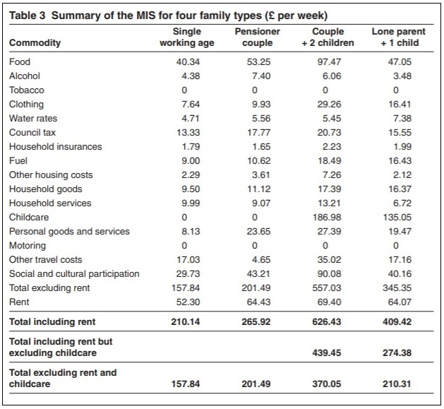
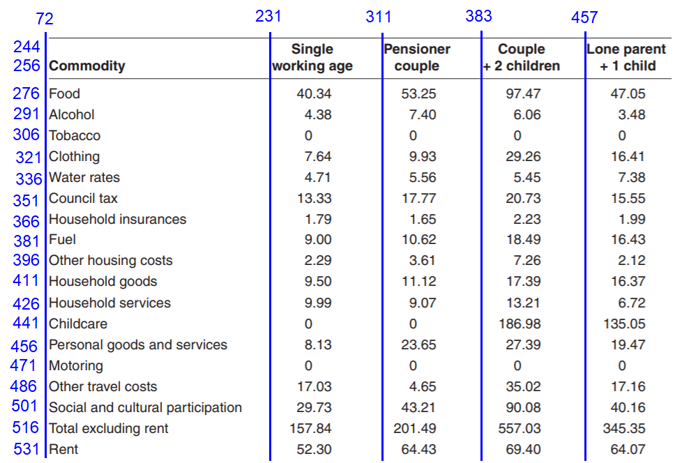

I’ve had the unfortunate task recently of having to liberate some data from pdfs; all part of the ‘Sexiest Job In The World’(TM). Fortunately after some blundering about I’ve managed to get a decent result, and I thought I’d write up the process because it’s no doubt something I’m going to have to do again, and in case anyone else finds it useful.
The pdftools package has been around for a while, allowing you to extract data line by
line from a pdf. However, a relatively new feature (launched late last year) is the
pdf_data() function, which
tells you the position on the page of every word you extract. This is particularly useful if
you are trying to extract a table and can’t rely on inferring delimiters from whitespace.
The example I’m using here is not the pdf I was scraping for work, because that one is extremely long and boring (unless you are fascinated by which types of colouring you are allowed to feed to ornamental fish, or which gut flora stabilisers are permitted for weaned piglets). Instead, I’ve picked a simpler table as an illustrative example, from the very interesting world of the ‘Minimum Income Standard’. This is a consensus based measure of how much money is required to live to an acceptable minimum standard in the UK today. Some of the headline tables are in a more easily scrapable html page, but the detail is buried in a pdf. And maybe you want that for some reason? For example, Table 3 in the report gives the amounts that different family types are judged to need for spending on different things.

This table is on page 33 of the pdf, so I start by grabbing everything on that page. The
pdf_data() function produces a list with one item per page, so I select the 33rd.
library(tidyverse)
library(pdftools)
library(knitr)
library(kableExtra)
pdfdata <- pdf_data("https://www.jrf.org.uk/file/37389/download?token=pg1Xs2Qb&filetype=full-report") %>%
.[[33]]
head(pdfdata)## # A tibble: 6 x 6
## width height x y space text
## <int> <int> <int> <int> <lgl> <chr>
## 1 52 11 222 42 TRUE Minimum
## 2 42 11 277 42 TRUE income
## 3 57 11 323 42 TRUE standards
## 4 15 11 383 42 TRUE for
## 5 48 11 402 42 TRUE selected
## 6 34 11 454 42 TRUE familyIt grabs every word, one per line of the table, along with its width, height and position on the page. But how do you make sense of that?? How do you turn this into a table? The blog post that launched the new feature helpfully says: “Converting this pdf data into the original data frame is left as an exercise for the reader :)” with the smiley face and everything, trololol. So I had to work out a way, which I did, and as ever I’m not convinced it’s the cleverest, easiest or quickest way…but it’s a way!
To illustrate what the numbers mean in practice, here is how the title of the table is represented:
pdfdata[106:115,]## # A tibble: 10 x 6
## width height x y space text
## <int> <int> <int> <int> <lgl> <chr>
## 1 29 10 72 226 TRUE Table
## 2 6 10 104 226 TRUE 3
## 3 52 10 117 226 TRUE Summary
## 4 10 10 172 226 TRUE of
## 5 17 10 186 226 TRUE the
## 6 20 10 207 226 TRUE MIS
## 7 15 10 230 226 TRUE for
## 8 22 10 249 226 TRUE four
## 9 33 10 274 226 TRUE family
## 10 30 10 310 226 TRUE typesAll the words have a y co-ordinate of 226, and you can also see how these words are spread along the x axis from 72 to 340.
I’m not really interested in the title, the first thing I want is the header, which is on two rows, and I can find out which by searching for the relevant text:
pdfdata %>%
filter(grepl("Single|Pensioner|Couple|Lone",text))## # A tibble: 4 x 6
## width height x y space text
## <int> <int> <int> <int> <lgl> <chr>
## 1 30 9 246 244 FALSE Single
## 2 48 9 311 244 FALSE Pensioner
## 3 33 9 394 244 FALSE Couple
## 4 23 9 457 244 TRUE Lonepdfdata %>%
filter(grepl("Commodity|working|couple|children",text))## # A tibble: 5 x 6
## width height x y space text
## <int> <int> <int> <int> <lgl> <chr>
## 1 45 11 337 112 TRUE children,
## 2 38 9 231 256 TRUE working
## 3 32 9 319 256 FALSE couple
## 4 38 9 400 256 FALSE children
## 5 55 9 72 256 FALSE CommodityThe header is on rows 244 and 256. Where is the bottom of the table? I don’t want the totals rows, so I only want to go as far as the row with “Rent”.
pdfdata %>%
filter(text == "Rent")## # A tibble: 1 x 6
## width height x y space text
## <int> <int> <int> <int> <lgl> <chr>
## 1 21 9 72 531 FALSE RentThis is y = 531. Where are the rows between this?
pdfdata %>%
filter(y > 256 & y < 531) %>%
select(y) %>%
unique()## # A tibble: 17 x 1
## y
## <int>
## 1 276
## 2 291
## 3 306
## 4 321
## 5 336
## 6 351
## 7 366
## 8 381
## 9 396
## 10 411
## 11 426
## 12 441
## 13 456
## 14 471
## 15 486
## 16 501
## 17 51617 rows - yup you can see from the table that’s right. So we know where the rows start and end. What about the columns? Look for the leftmost word in each:
pdfdata %>%
filter(grepl("Commodity|working|Pensioner|\\+|Lone", text)) %>%
arrange(x)## # A tibble: 6 x 6
## width height x y space text
## <int> <int> <int> <int> <lgl> <chr>
## 1 55 9 72 256 FALSE Commodity
## 2 38 9 231 256 TRUE working
## 3 48 9 311 244 FALSE Pensioner
## 4 5 9 383 256 TRUE +
## 5 23 9 457 244 TRUE Lone
## 6 5 9 467 256 TRUE +Now we have the numbers the table can be visualised thus (dodgy paint drawings are not an essential part of this process):

From here it’s a relatively straightforward merging exercise. I
start by restricting the data I’m working with to within the dimensions of interest, from
the header to the rent expenditure row.
tabledata <- pdfdata %>%
filter(x >= 72) %>%
filter(y >= 244 & y <= 531) %>%
arrange(x,y)Mercifully, all the text in each row is on the same y dimension (different sized fonts in different
columns meant that this was not the case in the data I was
dealing with at work!). So each row is represented by a single y value.
But I will need to cut the x values into columns, using the values identified above as
cut points (minus 1 to catch everything). Then it’s just a case of collapsing together
the data within each cell - i.e. each row/column combination - and then a spread().
Finally the top two rows need to be collapsed together into a single row.
mistable <- tabledata %>%
mutate(col = cut(x, breaks = c(71, 230, 310, 382, 456, Inf),
labels = as.character(c(1:5)))) %>%
arrange(col, y) %>%
group_by(col, y) %>%
mutate(text = paste(text, collapse = " ")) %>%
ungroup() %>%
select(y, text, col) %>%
unique() %>%
spread(col, text) %>%
mutate(row = c(1,1:19)) %>%
replace(., is.na(.), "") %>%
group_by(row) %>%
summarise_all(paste, collapse = " ") %>%
mutate_all(., trimws) %>%
select(-row, -y)Nearly there! now just need to make the top row the column names, and get rid of the penultimate row.
colnames(mistable) <- mistable[1,]
mistable <- mistable %>%
slice(-1) %>%
slice(-(nrow(.)-1))
kable(mistable, align = "lcccc",
caption = "Components of the Minimum Income Standard for four family types") %>%
kable_styling() %>%
footnote(general = "Source: https://www.jrf.org.uk/report/minimum-income-standard-britain-what-people-think")| Commodity | Single working age | Pensioner couple | Couple + 2 children | Lone parent + 1 child |
|---|---|---|---|---|
| Food | 40.34 | 53.25 | 97.47 | 47.05 |
| Alcohol | 4.38 | 7.40 | 6.06 | 3.48 |
| Tobacco | 0 | 0 | 0 | 0 |
| Clothing | 7.64 | 9.93 | 29.26 | 16.41 |
| Water rates | 4.71 | 5.56 | 5.45 | 7.38 |
| Council tax | 13.33 | 17.77 | 20.73 | 15.55 |
| Household insurances | 1.79 | 1.65 | 2.23 | 1.99 |
| Fuel | 9.00 | 10.62 | 18.49 | 16.43 |
| Other housing costs | 2.29 | 3.61 | 7.26 | 2.12 |
| Household goods | 9.50 | 11.12 | 17.39 | 16.37 |
| Household services | 9.99 | 9.07 | 13.21 | 6.72 |
| Childcare | 0 | 0 | 186.98 | 135.05 |
| Personal goods and services | 8.13 | 23.65 | 27.39 | 19.47 |
| Motoring | 0 | 0 | 0 | 0 |
| Other travel costs | 17.03 | 4.65 | 35.02 | 17.16 |
| Social and cultural participation | 29.73 | 43.21 | 90.08 | 40.16 |
| Rent | 52.30 | 64.43 | 69.40 | 64.07 |
| Note: | ||||
| Source: https://www.jrf.org.uk/report/minimum-income-standard-britain-what-people-think |
That’s the table! You can admire it, or use the data to make a picture (after coercing it into a tidy format first).
mistable %>%
filter(Commodity != "Tobacco" & Commodity != "Motoring") %>%
gather(famtype, amount, -Commodity) %>%
mutate(amount = as.numeric(amount)) %>%
ggplot(aes(famtype, amount, fill = Commodity)) +
geom_bar(stat = "identity", position = "stack", colour = "black", size = 0.5) +
coord_flip() +
ylab("Family type")
You can see the relative size of the total budget and its components for the different family types (sort of, yeah yeah it’s not the best viz in the world, I’ve run out of steam after all that pdf wrangling.) Look at the size of the childcare component (shown here in orange)!